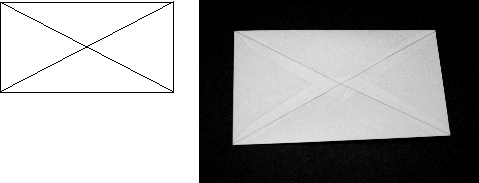

1. Take an envelope and cut off the back flap.
2. Draw diagonal lines on one side of the envelope.
3. Fold the envelope both ways along both diagonals, making good sharp folds. Folding against a ruler helps.
|  |
| Crease the envelope both ways along the diagonal lines. |
Return to Sierpinski Tetrahedron Procedure.